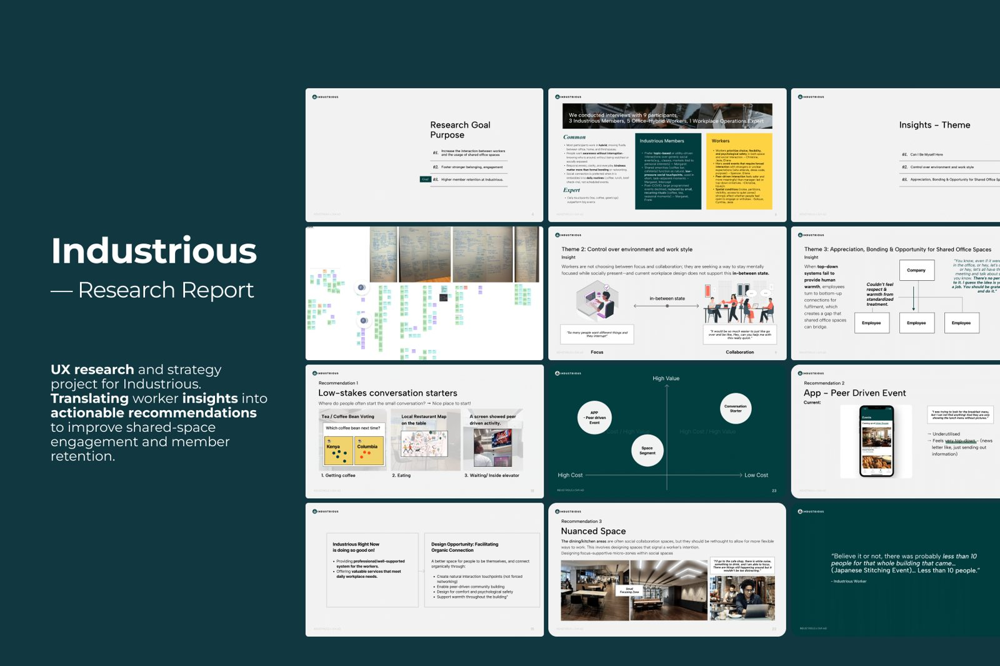
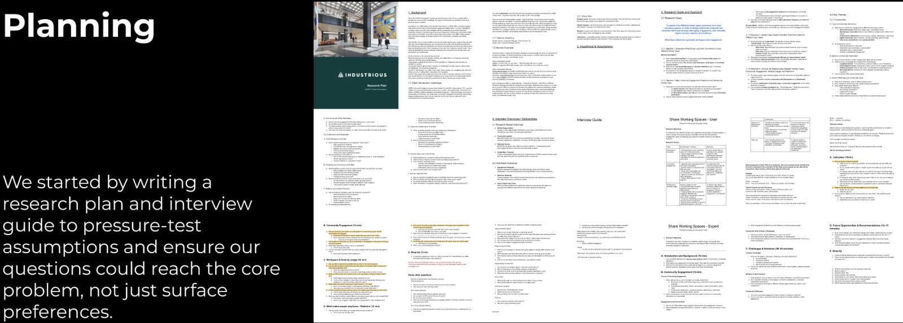
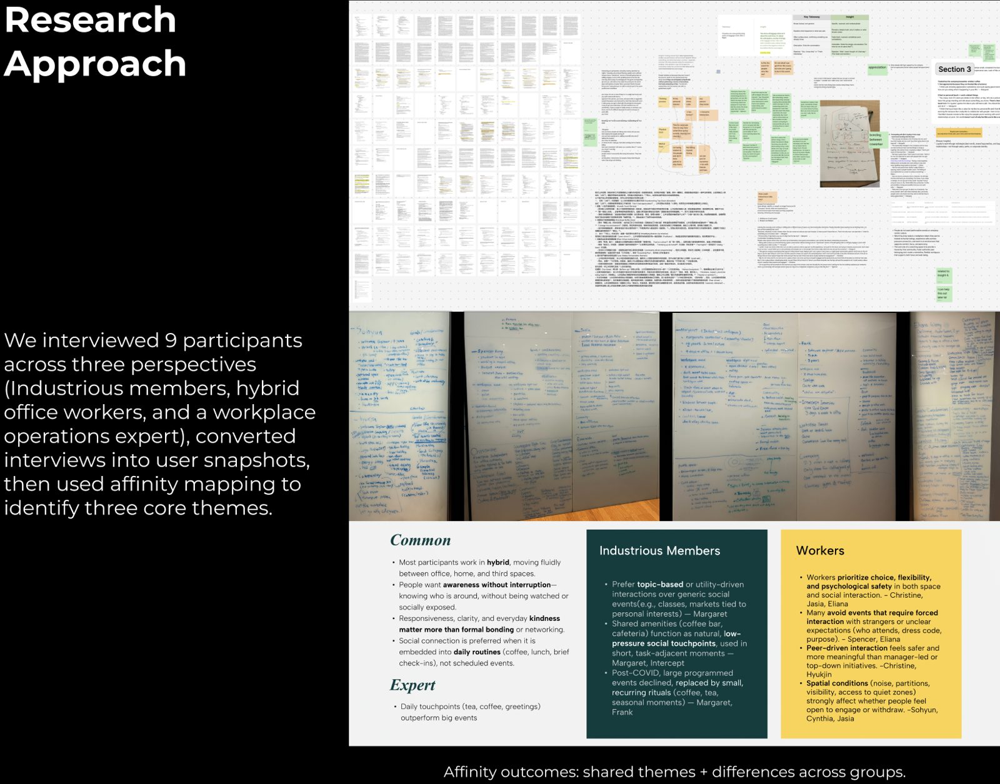
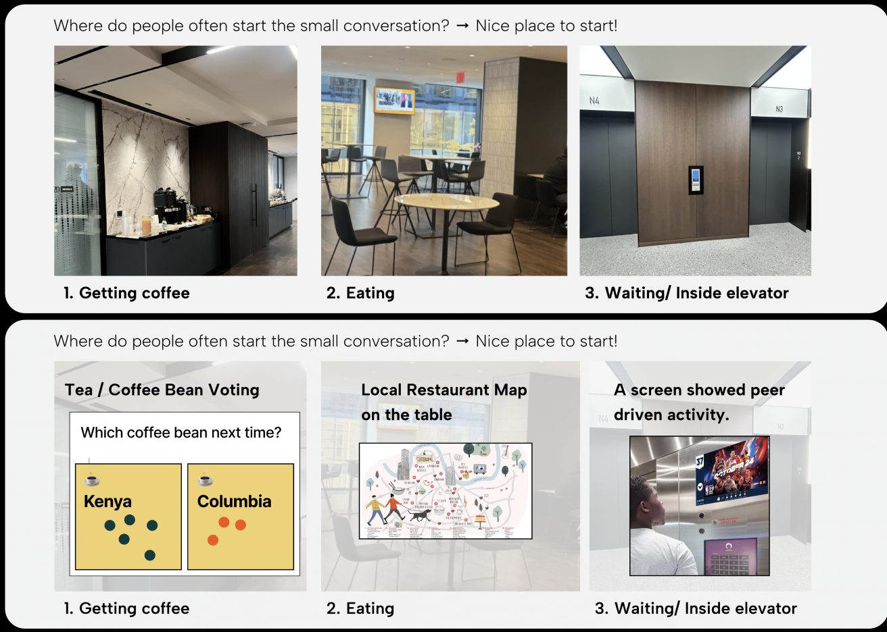
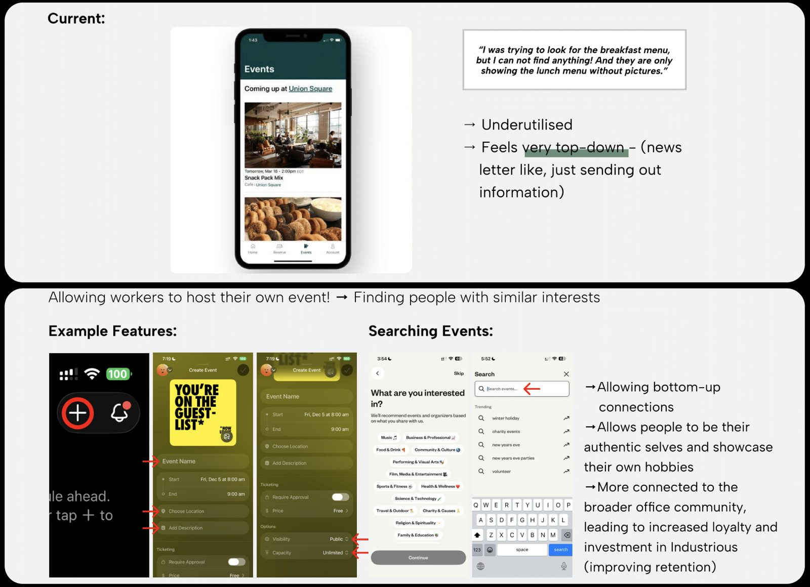
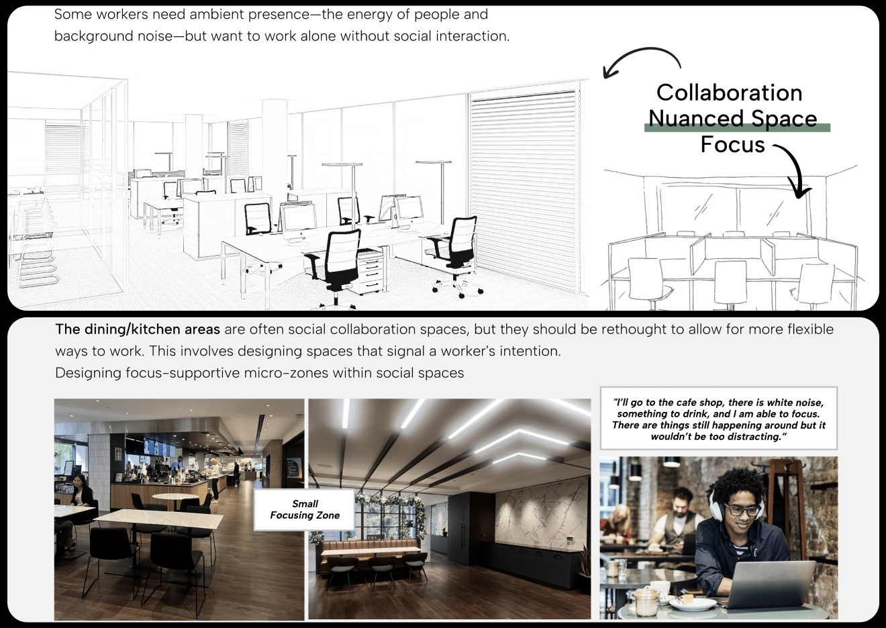
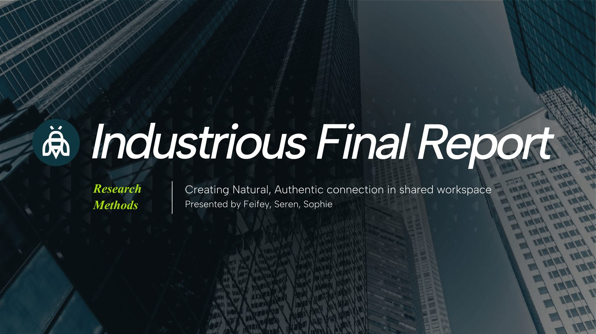
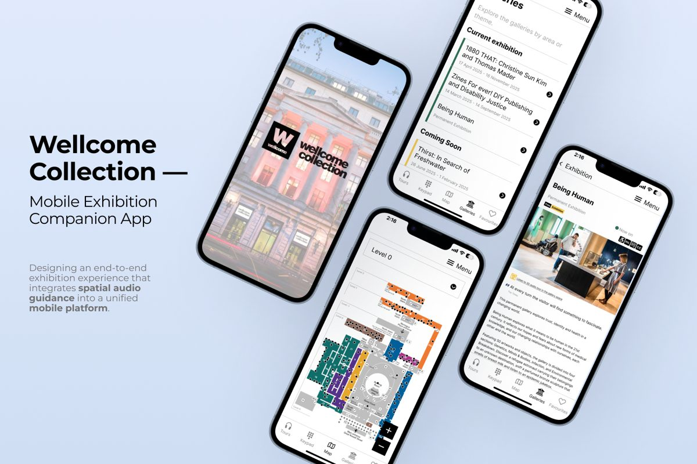

Industrious
Research and strategy on what makes people choose to connect in shared coworking spaces.
[Final report link]
1. Overview
What makes people show up
Industrious runs flexible offices and coworking spaces with a hospitality-led service: private offices plus shared cafés, lounges, meeting rooms and member events.
2. Problem
Thoughtful spaces, inconsistent turnout
- Attendance and shared-space use are inconsistent.
- Shared spaces shape satisfaction, return visits and long-term retention.
- Feedback is collected about every 90 days, but it is hard to turn into clear direction.
"Believe it or not, there was probably less than 10 people for that whole building that came... Less than 10 people."Margaret Wiltshire, Industrious worker, on a Japanese stitching event
3. Research
9 interviews, 3 perspectives, 3 themes
Who we spoke to
- Industrious members
- Hybrid office workers
- A workplace operations expert
What we wanted to learn
- Motivation to show up
- Engagement and community preferences
- Hospitality, care and belonging
- Value of amenities and experience strategy


Key findings
4. Solution
Three recommendations Industrious can act on
Low-stakes conversation starters
Small prompts where people already pause: the coffee bar, the kitchen, the elevator screen.
- Starts from a shared object, so no awkward small talk.
- Taking part is optional.
- Measure: participation and repeat attendance.

Peer-driven events in the app
Shift the app from broadcasting news to helping members host and join their own events.
- A "Host an event" flow with interest tags and light RSVP.
- Bottom-up connection feels more real than top-down programming.
- Measure: member-hosted events, RSVP and attendance.

Nuanced space
Focus micro-zones inside social areas, so people can be around others without being asked to interact.
- Seat type, light and acoustic cues mark the zone.
- Simple status signals, like table signage.
- Measure: fewer interruptions, use of the zones.

Final deliverable

5. Reflection
Where it goes next
Next for Industrious
- Test 1 to 2 low-stakes touch points at one location.
- Prototype a member-led event flow in the app.
- Try focus micro-zones inside social spaces.
- Build a facilitator playbook for Workplace Experience teams.
What I took away
- Treat the interview guide like a hypothesis test.
- Tag notes as claims or behaviours. Behaviours gave the best insights.
- Frame insights as what changes, why it works, and what success looks like.
See next project
Wellcome Collection
A mobile companion that brings exhibition information and audio guides into one flow.
